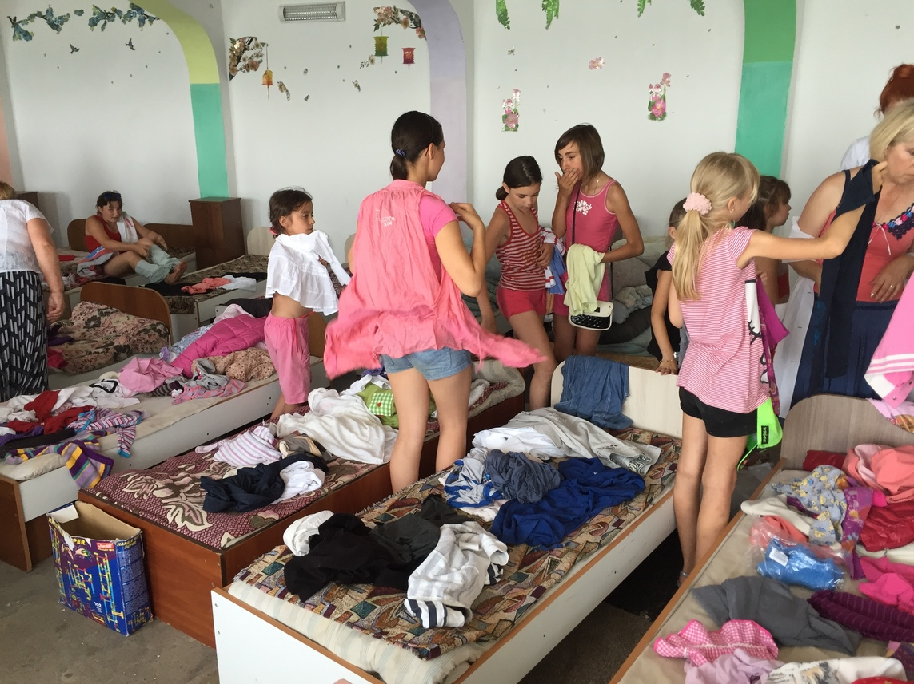

Wir nehmen gerne Spenden an und verwirklichen damit viele Träume und ermöglichen neue Aussichten
und Zielsetzungen damit. Für pauschale Spenden können wir leider nicht garantieren, dass Ihre Spende
zielgenau ankommt, da es sich mit Vereinsausgaben prozentual mischen könnte. Aus diesem Grunde sollten
die Spendenbeiträge genau zum aktuellen Projekt zugeordnet werden. So können Sie sich zielgenau am
Projekt beteiligen, bekommen dazu neben der Spendenbescheinigung ein Zertifikat und Bericht über die
Verwendung Ihrer Spende.
Spendenbedinungen
1. Information bekommen
Erst lesen Sie bitte genau die Information bezüglich unseres Spendenbedingungen
4. Unseres Dank bekommen
Die Bestätigung und noch kleine Dankbar-Geschenk kommt zu Ihnen per Post.
2. Projekt wählen
Nun können Sie sich selbst entscheiden, welches Hilfsprojekt Sie unterstützen möchten.
3. Spenden
Unsere Bankdaten finden Sie immer am Ende der Seite. Oder schreiben Sie uns eine Email!
Was ist unser Vereinprinzip?
Das Vereinsprinzip lautet:
dass die Spendengelder nur gegen Zweck und Projektverbundener Leistungen so genannte «Projektanteile» berücksichtigt werden.
Da die Sachspenden sich negativ erwiesen haben, wurde es später etschieden, das Geldspenden zu sammeln und für geziellte Projekte weiter zu benutzen.
Schon ein Jahr später haben sich die Mühe ausgezahlt.
Die eingesammelten Spenden wurden für die Projekte Kinderzimmer, Computerraum und Wunschallee verwendet. Jedes Projekt erfolgte auf Basis des persönlichen Besuches, wo die benötigten Baustoffe von Vereinsmitgliedern eingekauft und Arbeiter mit den Maßnahmen beauftragt wurden.
Sachspenden..?
Im Zeitraum von 2016 bis 2018 wurden mehr als 380 KG an Kleidung gebracht Hauptsächlich von Vadym Kauschansky persönlich hingebracht oder vereinzelt aus Deutschland verschickt. Wobei die Spender, die Versandkosten nicht über den Verein absetzen konnten und selber trugen.
Sachspenden haben sich als ehr negativ erwiesen, weshalb die leider nicht Vereinsrechtlich berücksichtigt wurden.

Sommer 2016/ Sachspenden
von 2016 bis 2018 wurden mehr als 380 KG an Kleidung gebracht